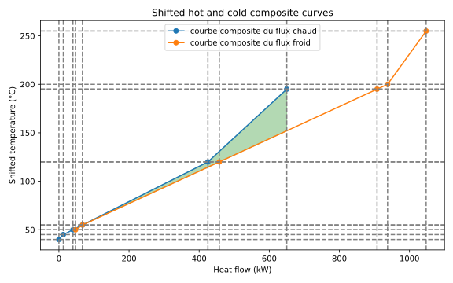
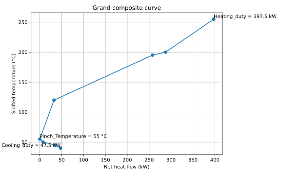
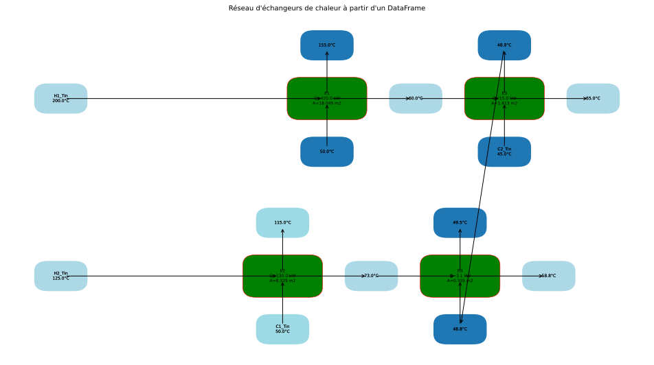

6. Analyse de pincement
The module PinchAnalysis optimizes la heat recovery between flux
chauds et froids : à partir d’une simple liste de flux, il calculates the utilités
minimales (chaude et froide), la chaleur récupérable, le point de pincement, et
propose un network d’échangeurs. This page déroule un seul cas de bout en
bout — le code, ses real outputs are shown, then leur interprétation. Toutes les
valeurs et figures ci-dessous sont produites en exécutant actually la
library on le jeu de flux présenté.
Le problème

Deux flux chauds à refroidir et deux flux froids à chauffer. L’analyse Pinch détermine combien de chaleur ces flux peuvent s’échanger between eux, et donc les utilités (vapeur, eau de refroidissement) actually nécessaires.
On considère quatre flux de procédé, with ΔTmin = 10 °C (soit
dTmin2 = 5 K) :
Flux |
Type |
Ti [°C] |
To [°C] |
mCp [kW/K] |
Rôle |
|---|---|---|---|---|---|
H1 |
chaud |
200 |
50 |
3,0 |
flux chaud à refroidir |
H2 |
chaud |
125 |
45 |
2,5 |
flux chaud à refroidir |
C1 |
froid |
50 |
250 |
2,0 |
flux froid à chauffer |
C2 |
froid |
45 |
195 |
4,0 |
flux froid à chauffer |
Le code
import pandas as pd
from PinchAnalysis import PinchAnalysis
# Un flux par ligne. Colonnes attendues par PinchAnalysis.Object :
# id, name : identifiant et nom du flux
# Ti, To : températures initiale / finale [°C]
# mCp : débit de capacité thermique [kW/K]
# dTmin2 : ΔTmin/2 propre au flux [K]
# integration : True pour inclure le flux dans l'analyse
# Le type (chaud/froid) est déduit automatiquement : Ti > To => chaud.
df = pd.DataFrame({
'id': [1, 2, 3, 4],
'name': ['H1', 'H2', 'C1', 'C2'],
'Ti': [200, 125, 50, 45],
'To': [50, 45, 250, 195],
'mCp': [3.0, 2.5, 2.0, 4.0],
'dTmin2': [5, 5, 5, 5],
'integration': [True, True, True, True],
})
# Toute l'analyse est calculée à la construction de l'objet.
pinch = PinchAnalysis.Object(df)
# Indicateurs de synthèse
print(f"Température de pincement (décalée) : {pinch.Pinch_Temperature} °C")
print(f"Utilité chaude minimale Qh,min : {pinch.Heating_duty} kW")
print(f"Utilité froide minimale Qc,min : {pinch.Cooling_duty} kW")
print(f"Chaleur récupérable : {pinch.heat_recovery} kW")
# DataFrames de détail
print(pinch.stream_list) # flux + températures décalées
print(pinch.df_surplus_deficit) # cascade énergétique par intervalle
# Figures
pinch.plot_composites_curves() # courbes composites chaude / froide
pinch.plot_GCC() # grande courbe composite
pinch.graphical_hen_design(plot=True) # réseau d'échangeurs proposé
Les results
1. Indicateurs de synthèse (output console) :
Température de pincement (décalée) : 55 °C
Utilité chaude minimale Qh,min : 397.5 kW
Utilité froide minimale Qc,min : 47.5 kW
Chaleur récupérable : 602.5 kW
2. Flux with temperatures décalées — pinch.stream_list :
id name Ti To mCp dTmin2 StreamType STi STo delta_H
0 1 H1 200 50 3.0 5 HS 195 45 -450.0
1 2 H2 125 45 2.5 5 HS 120 40 -200.0
2 3 C1 50 250 2.0 5 CS 55 255 400.0
3 4 C2 45 195 4.0 5 CS 50 200 600.0
StreamType:HS(chaud) siTi > To, sinonCS(froid).STi/STo: temperatures décalées de±dTmin2(−5 K for les chauds, +5 K for les froids) — l’astuce qui garantit un écart real deΔTminbetween tout flux chaud et tout flux froid.delta_H = mCp × (To − Ti): enthalpy échangée by le flux.
3. Cascade energy — pinch.df_surplus_deficit (cœur de la method) :
IntervalName Tsup Tinf mCp delta_H cumulative_delta_H
255-200 255 200 -2.0 -110.0 -110.0
200-195 200 195 -6.0 -30.0 -140.0
195-120 195 120 -3.0 -225.0 -365.0
120-55 120 55 -0.5 -32.5 -397.5 <- minimum
55-50 55 50 1.5 7.5 -390.0
50-45 50 45 5.5 27.5 -362.5
45-40 45 40 2.5 12.5 -350.0
Le minimum de cumulative_delta_H vaut −397,5 kW à la frontière
55 °C : c’est le point de pincement, et cette valeur donne directement
Qh,min.
4. Courbes composites — pinch.plot_composites_curves() :

Composite chaude (bleu) et composite froide (orange) en temperatures décalées. Le recouvrement horizontal correspond à la chaleur récupérable (602,5 kW) ; les écarts résiduels à gauche (47,5 kW) et à droite (397,5 kW) donnent les deux utilités minimales.
5. Grande courbe composite (GCC) — pinch.plot_GCC() :

La GCC touche l’axe vertical au pincement (55 °C), s’ouvre to le haut de
Qh,min = 397,5 kW et to le bas de Qc,min = 47,5 kW. C’est l’outil
pour positionner des utilités à plusieurs niveaux (vapeur HP/MP/BP).
6. Réseau d’échangeurs proposé — pinch.graphical_hen_design() then
pinch.heat_exchangers :
HS CS HeatExchanged delta_tlm UA Zone
H1 C2 420.00 23.27 18.05 au-dessus du pinch
H2 C1 130.00 15.61 8.33 au-dessus du pinch
H1 C2 15.00 10.61 1.41 en dessous du pinch
H2 C2 3.13 10.23 0.31 en dessous du pinch
L’échangeur principal H1 → C2 retrieves 420 kW au-dessus du pincement,
H2 → C1 en retrieves 130 kW, et deux petits appariements complètent la
récupération en dessous. Each ligne fournit le ΔT logarithmique et le
produit UA (avec U = 1000 W/m²·K by défaut) for dimensionner
l’échangeur.
L’appel pinch.graphical_hen_design(plot=True) trace directement le network
correspondant :

Output realle de graphical_hen_design(plot=True). Each flux chaud (H1,
H2) chemine à travers ses échangeurs to les flux froids (C1, C2), with les
temperatures d’input/output à chaque node et la power échangée par
appariement.
Les explications
Le bilan without integration. Avant toute récupération, chaque flux est traité
séparément : il faut évacuer 450 + 200 = 650 kW des flux chauds et fournir
400 + 600 = 1000 kW aux flux froids. Sans échange interne, cela demanderait
1000 kW d’utilité chaude et 650 kW d’utilité froide.
Pourquoi Qh,min = 397,5 kW et Qc,min = 47,5 kW. La cascade empile les
excédents et déficits intervalle by intervalle. Prise telle quelle, elle
descend jusqu’à −397,5 kW : cela reviendrait à transférer plus de chaleur
qu’il n’y en a de disponible — impossible. Pour rendre la cascade réalisable,
on injecte 397,5 kW en haut (Qh,min) ; la cascade se relève partout et
sa valeur en bas devient −350 + 397,5 = 47,5 kW (Qc,min). La
récupération se déduit by bilan : 1000 − 397,5 = 602,5 kW. On passe donc de
1000 → 397,5 kW de vapeur (−60 %) et de 650 → 47,5 kW d’eau de
refroidissement (−93 %), only en faisant échanger les flux between eux.
Le rôle du point de pincement. Le pincement est l’endroit où la cascade s’annule (temperature décalée 55 °C, soit 60 °C côté chaud et 50 °C côté froid). Il coupe le procédé en deux zones indépendantes et impose trois règles d’or, respectées by le network ci-dessus :
ne jamais transférer de chaleur à travers le pincement ;
au-dessus du pincement : aucune utilité froide ;
en dessous du pincement : aucune utilité chaude.
Violer une seule de ces règles augmente simultanément Qh et Qc de la
même quantité — c’est l’erreur de conception que l’analyse Pinch évite.
Note
Choix du ΔTmin : 10–20 °C for un procédé standard, 3–5 °C en cryogénie,
20–40 °C en haute temperature. Plus ΔTmin est faible, moins on consomme
d’utilités mais plus la surface d’échange (donc l’investissement) augmente ;
l’optimum se trouve by analyse du coût total annualisé (TAC).